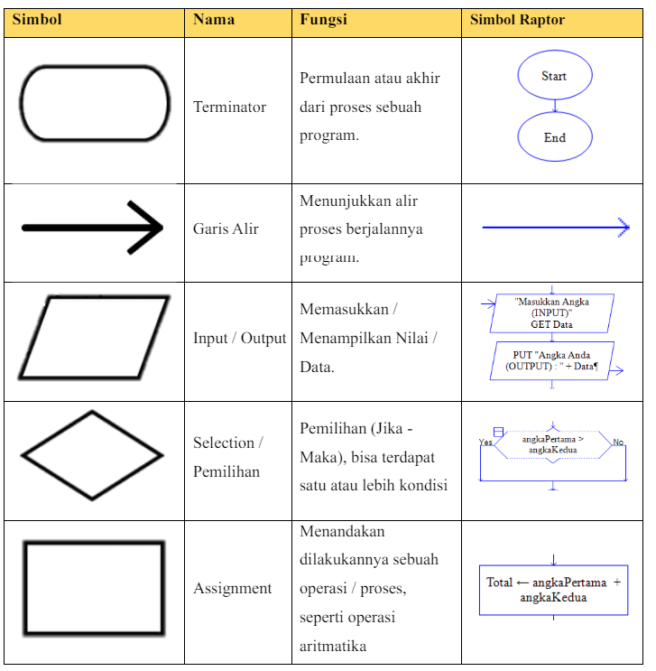
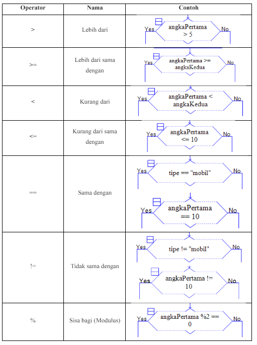
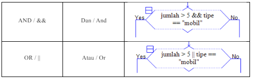
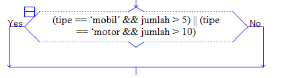
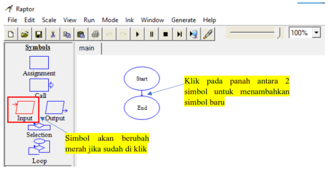
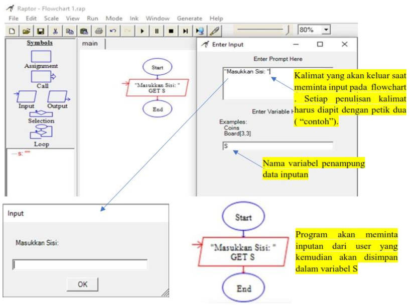
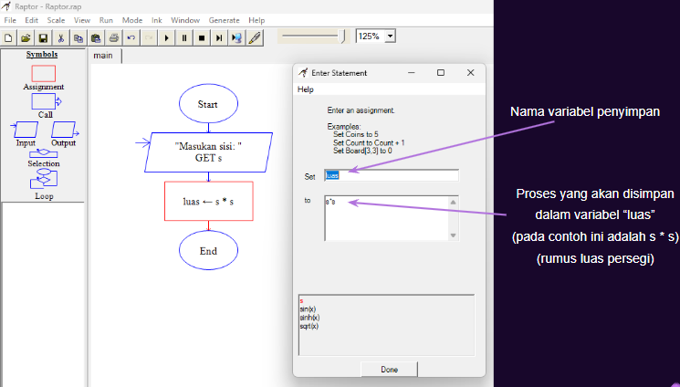
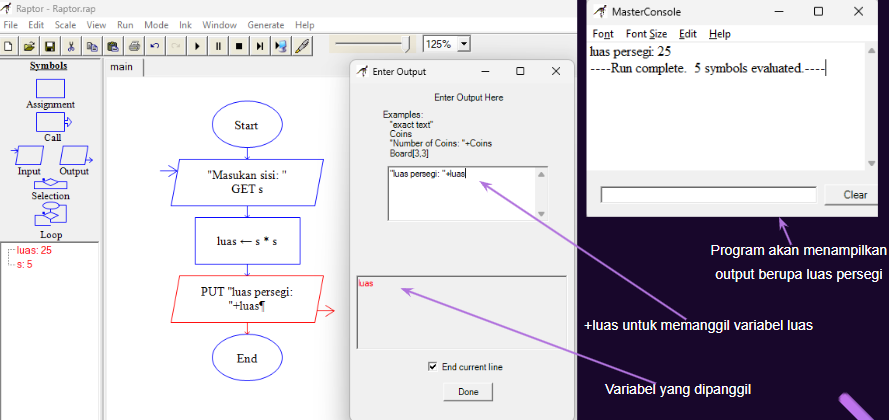
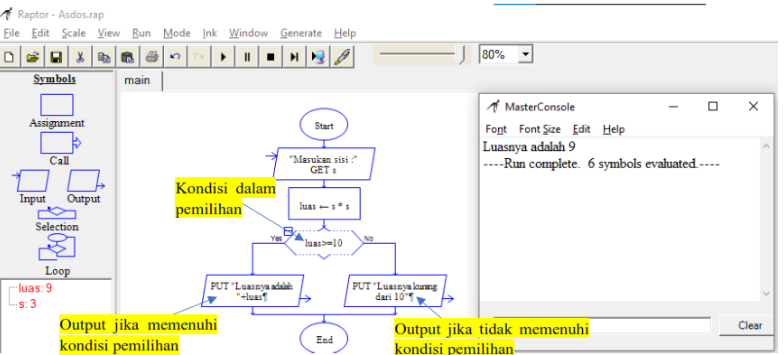
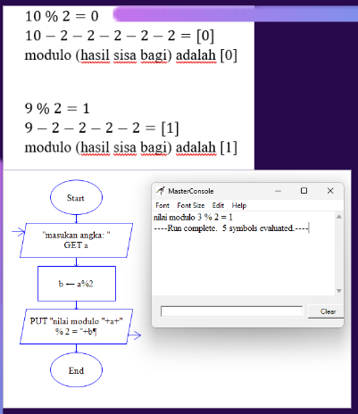

19-06-2024
120k Suka

FlowChart sendiri merupakan suatu Diagram yang menggambarkan langkah-langkah dan juga solusi (keputusan) yang dilakukan di dalam sebuah program. Flowchart biasanya disajikan dalam bentuk simbol-simbol grafis yang dimana setiap simbolnya ditunjuk dengan panah yang menandakan alir dari flowchart tersebut.
Untuk membuat suatu algoritma menjadi semakin mudah untuk dipahami oleh banyak orang, dan juga membuat sebuah program menjadi lebih sederhana berdasarkan gambaran dari alir jalannya sebuah program yang disajikan dengan simbol-simbol grafis.

Berikut fungsi ToolBar yang ada di flowchart.

 
Penggunaan AND atau OR bisa dipakai jika terdapat dua atau lebih kondisi, secara sederhana AND mengharuskan seluruh kondisi terpenuhi agar berjalan ke “Yes” dan OR akan berjalan ke “Yes” jika ada minimal satu saja kondisi yang terpenuhi. Jika terdapat 3 atau lebih kondisi yang saling berhubung kita bisa menggunakan kedua operator AND dan OR (menggunakan tanda kurung). Seperti contoh: 
*Dalam kondisi ini program akan berjalan ke “Yes” jika salah satu kondisi terpenuhi yaitu kondisi (tipe merupakan mobil dan jumlah lebih dari 5 (Kedua syarat ini harus terpenuhi !)) atau (tipe merupakan motor dan jumlah lebih dari 10 (Kedua syarat ini harus terpenuhi !)).
• Memasukkan Symbols 
• Input 
• Asiggnment 
• Output 
• Pemilihan/Selection 
• Operasi Modulus 
Flowchart (Bagian 02)
5 Komentar
Komentar Pengguna
Mahasiswa Informatika
19-06-2024Kelvin deodorant
19-06-2024Verdi Tokyo Mokyo
20-06-2024Alfredo Pangsit
20-06-2024Kelvin Majapahit
22-06-2024Verdi Hime
23-06-2024